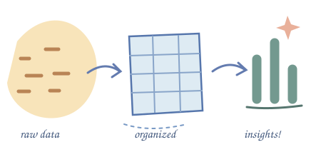

M.Sc. Computer Science
Mahidol University
GPA 3.94 / 4.00I work with databases, reporting, and data analysis. I’m building on that experience through practical projects in machine learning and natural language processing.
Healthcare · Insurance · Digital products

Explore my projects and professional background.
LEARNING & PRACTICE
Mahidol University
GPA 3.94 / 4.00Rangsit University
GPA 3.53 / 4.00Data Analyst — DataCamp, 2025
Data Engineer — DataCamp, 2025
Oracle Autonomous DB Cloud 2021 Specialist — Oracle University, 2021
Oracle 12C Database Administration — Info Wave Training Center, 2020
Burmese: Native · English: Intermediate · Thai: Basic
LET’S TALK
I’m interested in data analysis, data science, and information management opportunities.
senglikareng@gmail.com ↗